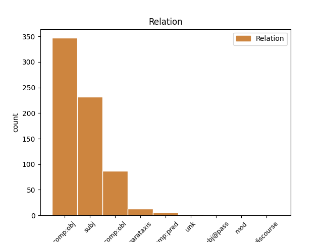
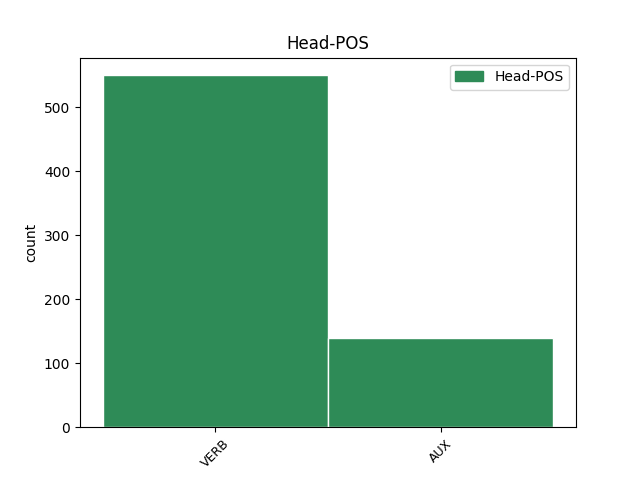
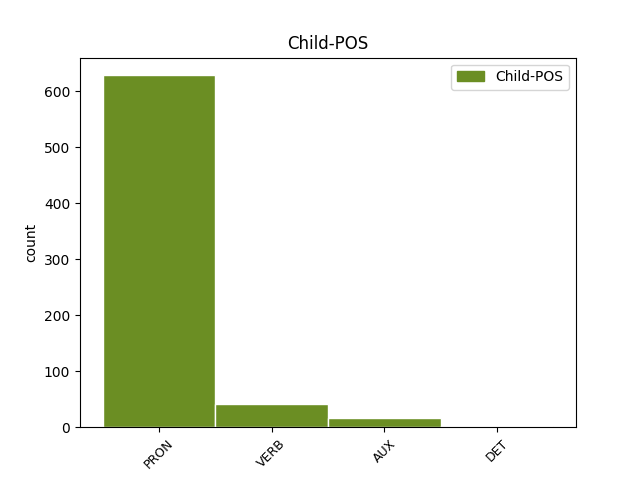

Distribution of features within this leaf



Agreement Rules sorted by frequency.
- When the dependent token is the subject(subj) of the head token, and the dependent token is PRON.
1 “ _ _ _ _ 0 _ _ _
2 Ja ja PRON PPhs1 Case=Nom|Number=Sing|Person=1|PronType=Prs 3 subj _ _
3 som byť VERB VKesa+ Aspect=Imp|Mood=Ind|Number=Sing|Person=1|Polarity=Pos|Tense=Pres|VerbForm=Fin 0 _ _ _
4 navine _ _ _ _ 0 _ _ _
5 ! _ _ _ _ 0 _ _ _
6 “ _ _ _ _ 0 _ _ _
7 hrdo _ _ _ _ 0 _ _ _
8 zvolal _ _ _ _ 0 _ _ _
9 Tarzan _ _ _ _ 0 _ _ _
10 . _ _ _ _ 0 _ _ _
1 Zlá _ _ _ _ 0 _ _ _
2 víla _ _ _ _ 0 _ _ _
3 sa _ _ _ _ 0 _ _ _
4 princovi _ _ _ _ 0 _ _ _
5 Filipovi _ _ _ _ 0 _ _ _
6 posmievala _ _ _ _ 0 _ _ _
7 , _ _ _ _ 0 _ _ _
8 no _ _ _ _ 0 _ _ _
9 prezradila _ _ _ _ 0 _ _ _
10 mu _ _ _ _ 0 _ _ _
11 , _ _ _ _ 0 _ _ _
12 že _ _ _ _ 0 _ _ _
13 iba _ _ _ _ 0 _ _ _
14 on _ _ _ _ 0 _ _ _
15 môže _ _ _ _ 0 _ _ _
16 zrušiť _ _ _ _ 0 _ _ _
17 Zorničkinu _ _ _ _ 0 _ _ _
18 kliatbu _ _ _ _ 0 _ _ _
19 , _ _ _ _ 0 _ _ _
20 ak _ _ _ _ 0 _ _ _
21 ju ona PRON PFfs4 Case=Acc|Gender=Fem|Number=Sing|Person=3|PronType=Prs 22 comp:obj _ _
22 pobozká pobozkať VERB VKdsc+ Aspect=Perf|Mood=Ind|Number=Sing|Person=3|Polarity=Pos|Tense=Pres|VerbForm=Fin 0 _ _ _
23 . _ _ _ _ 0 _ _ _
1 Alfonz _ _ _ _ 0 _ _ _
2 prijal _ _ _ _ 0 _ _ _
3 s _ _ _ _ 0 _ _ _
4 úľavou _ _ _ _ 0 _ _ _
5 od _ _ _ _ 0 _ _ _
6 kamarátov _ _ _ _ 0 _ _ _
7 ponuku _ _ _ _ 0 _ _ _
8 , _ _ _ _ 0 _ _ _
9 že _ _ _ _ 0 _ _ _
10 mu on PRON PFms3 Animacy=Anim|Case=Dat|Gender=Masc|Number=Sing|Person=3|PronType=Prs 11 comp:obl _ _
11 pomôžu pomôcť VERB VKdpc+ Aspect=Perf|Mood=Ind|Number=Plur|Person=3|Polarity=Pos|Tense=Pres|VerbForm=Fin 0 _ _ _
12 pripraviť _ _ _ _ 0 _ _ _
13 oslavu _ _ _ _ 0 _ _ _
14 . _ _ _ _ 0 _ _ _
1 “ _ _ _ _ 0 _ _ _
2 Už _ _ _ _ 0 _ _ _
3 letím letieť VERB VKesc+ Aspect=Imp|Mood=Ind|Number=Sing|Person=3|Polarity=Pos|Tense=Pres|VerbForm=Fin 6 comp:obj _ SpaceAfter=No
4 ! _ _ _ _ 0 _ _ _
5 “ _ _ _ _ 0 _ _ _
6 kričí kričať VERB VKesc+ Aspect=Imp|Mood=Ind|Number=Sing|Person=3|Polarity=Pos|Tense=Pres|VerbForm=Fin 0 _ _ _
7 Polly _ _ _ _ 0 _ _ _
8 . _ _ _ _ 0 _ _ _
1 Kto _ _ _ _ 0 _ _ _
2 sochy _ _ _ _ 0 _ _ _
3 vytvorí vytvoriť VERB VKdsc+ Aspect=Perf|Mood=Ind|Number=Sing|Person=3|Polarity=Pos|Tense=Pres|VerbForm=Fin 11 subj _ _
4 a _ _ _ _ 0 _ _ _
5 ako _ _ _ _ 0 _ _ _
6 budú _ _ _ _ 0 _ _ _
7 vyzerať _ _ _ _ 0 _ _ _
8 , _ _ _ _ 0 _ _ _
9 ešte _ _ _ _ 0 _ _ _
10 nie _ _ _ _ 0 _ _ _
11 je byť AUX VKesc- Aspect=Imp|Mood=Ind|Number=Sing|Person=3|Polarity=Neg|Tense=Pres|VerbForm=Fin 0 _ _ _
12 isté _ _ _ _ 0 _ _ _
13 . _ _ _ _ 0 _ _ _
1 “ _ _ _ _ 0 _ _ _
2 To _ _ _ _ 0 _ _ _
3 je byť AUX VKesc+ Aspect=Imp|Mood=Ind|Number=Sing|Person=3|Polarity=Pos|Tense=Pres|VerbForm=Fin 7 comp:obj _ _
4 zaujímavé _ _ _ _ 0 _ _ _
5 , _ _ _ _ 0 _ _ _
6 “ _ _ _ _ 0 _ _ _
7 vraví vravieť VERB VKesc+ Aspect=Imp|Mood=Ind|Number=Sing|Person=3|Polarity=Pos|Tense=Pres|VerbForm=Fin 0 _ _ _
8 Maja _ _ _ _ 0 _ _ _
9 . _ _ _ _ 0 _ _ _
1 Ani _ _ _ _ 0 _ _ _
2 družka _ _ _ _ 0 _ _ _
3 , _ _ _ _ 0 _ _ _
4 ani _ _ _ _ 0 _ _ _
5 sok _ _ _ _ 0 _ _ _
6 ho _ _ _ _ 0 _ _ _
7 nesledujú sledovať VERB VKepc- Aspect=Imp|Mood=Ind|Number=Plur|Person=3|Polarity=Neg|Tense=Pres|VerbForm=Fin 0 _ _ _
8 . _ _ _ _ 0 _ _ _
9 Čo _ _ _ _ 0 _ _ _
10 ho _ _ _ _ 0 _ _ _
11 núti nútiť VERB VKesc+ Aspect=Imp|Mood=Ind|Number=Sing|Person=3|Polarity=Pos|Tense=Pres|VerbForm=Fin 7 parataxis _ _
12 vysedávať _ _ _ _ 0 _ _ _
13 na _ _ _ _ 0 _ _ _
14 konári _ _ _ _ 0 _ _ _
15 osamoteného _ _ _ _ 0 _ _ _
16 stromu _ _ _ _ 0 _ _ _
17 a _ _ _ _ 0 _ _ _
18 vyludzovať _ _ _ _ 0 _ _ _
19 hudbu _ _ _ _ 0 _ _ _
20 do _ _ _ _ 0 _ _ _
21 prázdna _ _ _ _ 0 _ _ _
22 ? _ _ _ _ 0 _ _ _
1 Nikita _ _ _ _ 0 _ _ _
2 sám _ _ _ _ 0 _ _ _
3 , _ _ _ _ 0 _ _ _
4 ako _ _ _ _ 0 _ _ _
5 je byť AUX VKesc+ Aspect=Imp|Mood=Ind|Number=Sing|Person=3|Polarity=Pos|Tense=Pres|VerbForm=Fin 12 parataxis _ _
6 v _ _ _ _ 0 _ _ _
7 texte _ _ _ _ 0 _ _ _
8 uvádzané _ _ _ _ 0 _ _ _
9 , _ _ _ _ 0 _ _ _
10 sa _ _ _ _ 0 _ _ _
11 neskôr _ _ _ _ 0 _ _ _
12 stáva stávať VERB VKesc+ Aspect=Imp|Mood=Ind|Number=Sing|Person=3|Polarity=Pos|Tense=Pres|VerbForm=Fin 0 _ _ _
13 novgorodským _ _ _ _ 0 _ _ _
14 biskupom _ _ _ _ 0 _ _ _
15 . _ _ _ _ 0 _ _ _
1 Stranu _ _ _ _ 0 _ _ _
2 nezaujímajú _ _ _ _ 0 _ _ _
3 konkrétne _ _ _ _ 0 _ _ _
4 činy _ _ _ _ 0 _ _ _
5 : _ _ _ _ 0 _ _ _
6 my my PRON PPhp1 Case=Nom|Number=Plur|Person=1|PronType=Prs 8 subj@pass _ _
7 si _ _ _ _ 0 _ _ _
8 potrpíme potrpieť VERB VKdpa+ Aspect=Perf|Mood=Ind|Number=Plur|Person=1|Polarity=Pos|Tense=Pres|VerbForm=Fin 0 _ _ _
9 len _ _ _ _ 0 _ _ _
10 na _ _ _ _ 0 _ _ _
11 myšlienky _ _ _ _ 0 _ _ _
12 . _ _ _ _ 0 _ _ _
1 Už _ _ _ _ 0 _ _ _
2 jej _ _ _ _ 0 _ _ _
3 vzhľad _ _ _ _ 0 _ _ _
4 mu _ _ _ _ 0 _ _ _
5 naháňal _ _ _ _ 0 _ _ _
6 hrôzu _ _ _ _ 0 _ _ _
7 , _ _ _ _ 0 _ _ _
8 a _ _ _ _ 0 _ _ _
9 nielen _ _ _ _ 0 _ _ _
10 vedomie _ _ _ _ 0 _ _ _
11 , _ _ _ _ 0 _ _ _
12 že _ _ _ _ 0 _ _ _
13 je byť AUX VKesc+ Aspect=Imp|Mood=Ind|Number=Sing|Person=3|Polarity=Pos|Tense=Pres|VerbForm=Fin 0 _ _ _
14 to _ _ _ _ 0 _ _ _
15 on on PRON PFms1 Animacy=Anim|Case=Nom|Gender=Masc|Number=Sing|Person=3|PronType=Prs 13 comp:pred _ SpaceAfter=No
16 . _ _ _ _ 0 _ _ _
1 Dodržiaval _ _ _ _ 0 _ _ _
2 som byť AUX VKesa+ Aspect=Imp|Mood=Ind|Number=Sing|Person=1|Polarity=Pos|Tense=Pres|VerbForm=Fin 0 _ _ _
3 toto _ _ _ _ 0 _ _ _
4 pravidlo _ _ _ _ 0 _ _ _
5 , _ _ _ _ 0 _ _ _
6 odkedy _ _ _ _ 0 _ _ _
7 som byť AUX VKesa+ Aspect=Imp|Mood=Ind|Number=Sing|Person=1|Polarity=Pos|Tense=Pres|VerbForm=Fin 2 mod _ _
8 napísal _ _ _ _ 0 _ _ _
9 prvú _ _ _ _ 0 _ _ _
10 hlúposť _ _ _ _ 0 _ _ _
11 z _ _ _ _ 0 _ _ _
12 toho _ _ _ _ 0 _ _ _
13 cyklu _ _ _ _ 0 _ _ _
14 , _ _ _ _ 0 _ _ _
15 krátku _ _ _ _ 0 _ _ _
16 esej _ _ _ _ 0 _ _ _
17 s _ _ _ _ 0 _ _ _
18 dlhým _ _ _ _ 0 _ _ _
19 názvom _ _ _ _ 0 _ _ _
20 Orgazmus _ _ _ _ 0 _ _ _
21 alebo _ _ _ _ 0 _ _ _
22 Hrôza _ _ _ _ 0 _ _ _
23 zo _ _ _ _ 0 _ _ _
24 sexuálneho _ _ _ _ 0 _ _ _
25 vyčerpania _ _ _ _ 0 _ _ _
26 . _ _ _ _ 0 _ _ _
Disagree Examples:
1 Silný _ _ _ _ 0 _ _ _
2 vietor _ _ _ _ 0 _ _ _
3 ! _ _ _ _ 0 _ _ _
4 " _ _ _ _ 0 _ _ _
5 ma ja PRON PPhs4 Case=Acc|Number=Sing|Person=1|PronType=Prs 6 comp:obj _ _
6 posiela posielať VERB VKesc+ Aspect=Imp|Mood=Ind|Number=Sing|Person=3|Polarity=Pos|Tense=Pres|VerbForm=Fin 0 _ _ _
7 späť _ _ _ _ 0 _ _ _
8 na _ _ _ _ 0 _ _ _
9 " _ _ _ _ 0 _ _ _
10 vajíčko _ _ _ _ 0 _ _ _
11 " _ _ _ _ 0 _ _ _
12 . _ _ _ _ 0 _ _ _
1 Ja _ _ _ _ 0 _ _ _
2 ich on PRON PFmp4 Animacy=Anim|Case=Acc|Gender=Masc|Number=Plur|Person=3|PronType=Prs 3 comp:obj _ _
3 poznám poznať VERB VKesa+ Aspect=Imp|Mood=Ind|Number=Sing|Person=1|Polarity=Pos|Tense=Pres|VerbForm=Fin 0 _ _ _
4 . _ _ _ _ 0 _ _ _
1 Takže _ _ _ _ 0 _ _ _
2 nacionalisticko _ _ _ _ 0 _ _ _
3 - _ _ _ _ 0 _ _ _
4 sociálny _ _ _ _ 0 _ _ _
5 populizmus _ _ _ _ 0 _ _ _
6 Mečiarov _ _ _ _ 0 _ _ _
7 je byť AUX VKesc+ Aspect=Imp|Mood=Ind|Number=Sing|Person=3|Polarity=Pos|Tense=Pres|VerbForm=Fin 0 _ _ _
8 , _ _ _ _ 0 _ _ _
9 povedal _ _ _ _ 0 _ _ _
10 by _ _ _ _ 0 _ _ _
11 som byť AUX VKesa+ Aspect=Imp|Mood=Ind|Number=Sing|Person=1|Polarity=Pos|Tense=Pres|VerbForm=Fin 7 parataxis _ SpaceAfter=No
12 , _ _ _ _ 0 _ _ _
13 prirodzeným _ _ _ _ 0 _ _ _
14 plodom _ _ _ _ 0 _ _ _
15 stáročného _ _ _ _ 0 _ _ _
16 vývinu _ _ _ _ 0 _ _ _
17 slovenskej _ _ _ _ 0 _ _ _
18 spoločnosti _ _ _ _ 0 _ _ _
19 . _ _ _ _ 0 _ _ _
1 Uvidíme uvidieť VERB VKdpa+ Aspect=Perf|Mood=Ind|Number=Plur|Person=1|Polarity=Pos|Tense=Pres|VerbForm=Fin 0 _ _ _
2 , _ _ _ _ 0 _ _ _
3 ako _ _ _ _ 0 _ _ _
4 do _ _ _ _ 0 _ _ _
5 celé _ _ _ _ 0 _ _ _
6 dopadne dopadnúť VERB VKdsc+ Aspect=Perf|Mood=Ind|Number=Sing|Person=3|Polarity=Pos|Tense=Pres|VerbForm=Fin 1 comp:obj _ SpaceAfter=No
7 . _ _ _ _ 0 _ _ _
1 Alebo _ _ _ _ 0 _ _ _
2 si _ _ _ _ 0 _ _ _
3 ju ona PRON PFfs4 Case=Acc|Gender=Fem|Number=Sing|Person=3|PronType=Prs 4 comp:obj _ _
4 stiahnite stiahnuť VERB VMdpb+ Aspect=Perf|Mood=Imp|Number=Plur|Person=2|Polarity=Pos|VerbForm=Fin 0 _ _ _
5 v _ _ _ _ 0 _ _ _
6 súbore _ _ _ _ 0 _ _ _
7 PDF _ _ _ _ 0 _ _ _
8 na _ _ _ _ 0 _ _ _
9 tej _ _ _ _ 0 _ _ _
10 istej _ _ _ _ 0 _ _ _
11 adrese _ _ _ _ 0 _ _ _
12 . _ _ _ _ 0 _ _ _